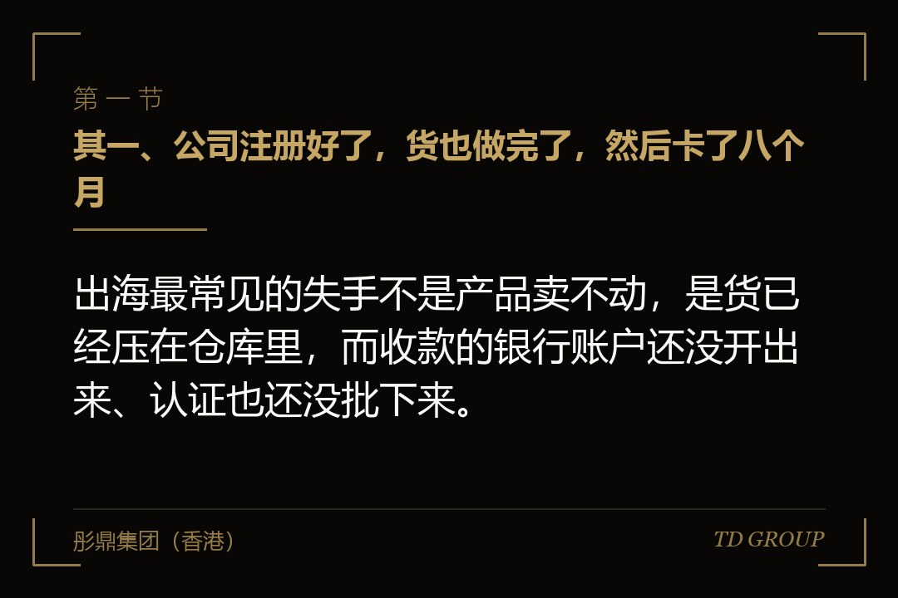
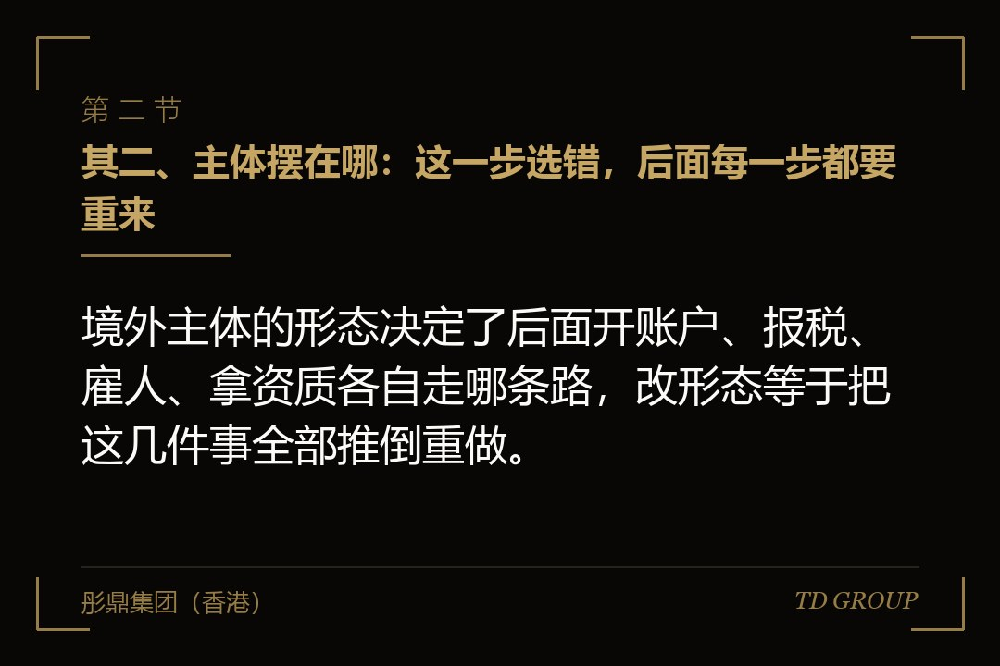
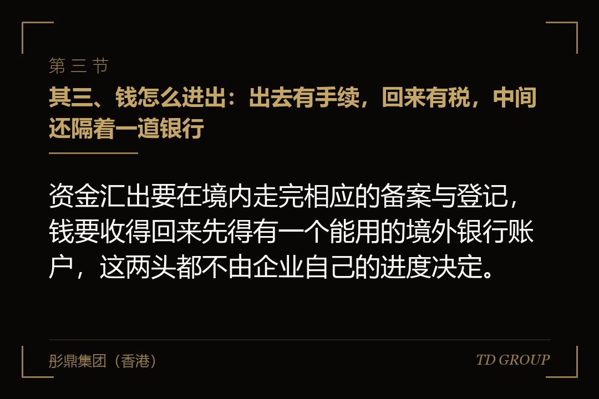

其一、公司注册好了，货也做完了，然后卡了八个月

结论先行：出海最常见的失手不是产品卖不动，是货已经压在仓库里，而收款的银行账户还没开出来、认证也还没批下来。
假设有家做户外用品的厂子，三十来号人，做折叠椅和帐篷杆这类金属件，给国内几个品牌代工了九年。行情一年比一年紧，老板决定自己出去做，在目标市场注册了一家公司，找了当地的代理机构，前后一个多月就把执照拿到手了。
拿到执照那天他觉得这事不难。接下来按国内的节奏推进：改了包装，备了头一批货，谈了两个当地的经销商，样品也寄出去了。
然后就停住了。银行那边要材料，一轮补完还有一轮，问的是钱从哪儿来、这家公司在当地做什么、最终受益人是谁；认证机构那边要送样、要看工厂，其中一项标准和他现在的产品结构对不上，要改材料。
八个月过去，货在仓库里躺着，两个经销商中的一个已经找了别家。这八个月里公司账上出去的钱，没有一分是花在客户身上的。
复盘的时候他说了一句很实在的话：这些事我都知道要办，我只是以为它们是并行的。而实际上它们是串起来的，一环卡住，后面全部往后挪。
其二、主体摆在哪：这一步选错，后面每一步都要重来

结论先行：境外主体的形态决定了后面开账户、报税、雇人、拿资质各自走哪条路，改形态等于把这几件事全部推倒重做。
常见的摆法有三种。其一是不在当地设主体，境内公司直接出口，货交给当地的经销商或者平台去卖。这一种起步最快，钱也花得少，缺点是当地发生的事你插不上手：客户资料在别人那儿，价格在别人那儿，出了品质纠纷也是别人在处理。
其二是设办事处或者类似的联络性机构。多数法域对这一类的定位是不独立开展经营，通常不能以自己的名义签商业合同、不能开发票，能做的是联络、市场推广和售后协调。很多老板是在准备签头一张合同的时候，才发现这个主体签不了。
其三是设子公司，也就是当地法律下的独立法人。它能签合同、能雇人、能开自己的银行账户，同时也要独立记账、独立报税、承担当地的雇主义务。它是最像一门生意的形态，也是养起来最贵的形态。
选哪一种，判据不是哪一种听起来正规，而是这一年你要在当地实际做哪几个动作。要不要以自己的名义签合同，要不要在当地雇人，要不要收当地货币的货款，要不要申请某项资质——把这四个问题各答一遍，形态基本就定了。
要注意的是，这三种之间的切换不是改个名字。从贸易方式改成设子公司，意味着资金要重新走一遍手续、账户要重新开、客户合同要重新签、税务身份要重新登记。所以宁可在动手之前多问两个人，也不要先设一个便宜的顶着。
其三、钱怎么进出：出去有手续，回来有税，中间还隔着一道银行

结论先行：资金汇出要在境内走完相应的备案与登记，钱要收得回来先得有一个能用的境外银行账户，这两头都不由企业自己的进度决定。
先说出去这一头。境内企业到境外去投资设立主体，是有备案与登记要求的，涉及发展改革、商务和银行外汇几条线，具体材料与办理方式以主管部门正式规则文本为准。要点只有一个：先把手续办完再汇钱，顺序反了，后面补起来很被动。
再说中间那道银行。境外银行对新开立的账户有一套自己的合规审查，要弄清楚资金来源、业务实质和最终受益人。一家在当地没有任何经营记录的新公司，材料天然是弱的，被反复要求补充是常态，而且被一家拒过之后，再去找下一家往往更难解释。
所以这件事的正确做法是提前起步、准备备用方案，而不是等到货要发了才去办。可以准备的东西包括：把商业模式写成一份能给外人看懂的说明，把上游合同和订单留档，把股权链条画清楚——这三样是被问得最多的。
最后是回来那一头。境外主体赚了钱，怎么把利润拿回来是另一套账。分红、服务费、货款，性质不同，当地的预提税和境内的处理也不同，而且每一种都要说得清商业实质，不能只是把钱挪个位置。
这一头值得在设主体之前就问一遍。等到账上真有利润了才开始想怎么拿回来，往往会发现当初那个结构不方便，而结构调整是要付代价的。
其四、用工：当地雇人和从国内派人，是两套完全不同的成本
结论先行：多数出海预算把人力按国内口径估，而当地雇佣的强制福利、解雇成本与试用期规则，常常把这一项抬到另一个量级。
差别集中在四处。一是强制福利与社会保险，雇主要承担的比例各地差得很远，它不是工资之外的一点零头，在有些法域是一笔和工资同量级的开支。
二是解雇。很多法域不接受给一笔钱就结束的做法，要有法定理由、要提前通知、要按工龄付法定补偿，程序不对还可能被认定为不当解雇。算下来，辞退一个人的成本可能比多雇一个人一整年还高。
还拿前面那家户外用品厂举例。它头一年在当地招了四个人，其中一个做了三个月不合适，老板按国内的习惯谈了一个月工资让他走。对方没同意，走了当地的劳动争议程序，最后企业付出的是几倍于此的补偿，还搭进去半年的时间和一笔当地律师的钱。
三是试用期。长度、能不能延长、期内解除要不要理由，这些常常写在法律里，不是合同想怎么约就怎么约。四是在有些地方，达到一定人数之后要有雇员代表机制，某些决定要先走完协商程序。
这四条合起来，意味着出海头一年不能按国内那套不合适就换的思路配人。招之前先把辞退这一条算清楚，用工形态也可以更灵活一些，比如先用服务外包或者当地的名义雇主安排过渡，等业务确定了再转成直雇。
从国内派人是另一条线。签证和工作许可的类型决定了他在当地能不能领薪、能不能作为法定代表签字、能待多久，办下来要多长时间也不由公司说了算。有企业是在人已经买好机票之后，才知道那类签证不允许在当地任职。
其五、准入、认证与数据：这几件事按月算，不按周算
结论先行：产品准入、认证、标签与数据合规通常要以月为单位，而多数企业是在货已经做完之后，才开始办这几件事。
认证不是买一张纸。多数体系要送样检测，有的还要审工厂、审体系文件，周期长的会跨过一个季度。更麻烦的是，检测出来的结论可能是当前设计不符合当地标准，要改材料、改结构、改说明书。
改设计意味着模具、采购、产线全部要跟着动。这笔钱发生在产品已经做完之后，属于典型的返工成本，而它本来在动手之前查一遍标准就能避掉大半。
那家户外用品厂卡住的正是这一环。它的帐篷杆用的是给国内客户做惯了的那种连接结构，送检之后被要求按当地标准调整，一改就动到模具，重新开模、重新送检、重新排产，前后压了小半年。老板后来说，这半年的代价不在改模具那笔钱上，在这半年里他什么都不能做。
标签和说明书也是硬规定。用哪种语言、要标哪些信息、警示标识怎么写、单位怎么换算，很多法域是写在法规里的，写错了货可以被扣在口岸。
数据是这两年新长出来的一环。客户名单、订单记录、员工信息要从境外传回国内，境内对数据出境有自己的规则，目的地对个人信息也有自己的保护规则，两头都要看。这件事不是上线以后再补的，它决定了业务系统怎么搭。
所以正确的顺序是先查准入再定产品规格，而不是先做完再去适配。这个顺序一反过来，头一年就会多出一轮返工和一段谁也说不准的等待。
其六、派谁去：头一年最贵的一笔开支，通常写在人这一栏
结论先行：派国内的老人过去，短板是语言和当地关系；直接招当地人，短板是管理够不着——这一条决定头两年的执行效率。
派老人过去的好处很明显：他懂产品、懂公司的做事方式、和老板之间不需要翻译。问题是他不懂当地的合同习惯、劳动规则和办事路径，前半年基本在学，而学的过程中每一个决定都可能是错的。
招当地人的好处是上手快，客户和主管部门那边路径熟。问题是他对这家公司没有历史，信息只能通过他一个人回传，老板在国内看到的，是他愿意让你看到的那一版。
比较稳的做法是把两件事拆开：国内派一个人管账和合同，当地招一个人管客户和执行。钱的签字权和当地的执行权放在两个人手上，不是因为信不过谁，是因为头一年信息本来就不对称，得留一条能自己核对的线。
还有一件事值得提前说清楚：出海不是给谁的升职安排。这个岗位真正需要的是一个愿意亲自跑银行、跑认证机构、跑仓库的人，头一年的活大部分是杂活，不是管理。
其七、现金：按十八个月不产生正现金流去做预算
结论先行：出海头一年基本是净流出，把预算按十八个月不产生正现金流去做，比按半年跑通去做更接近实际发生的情况。
为什么是十八个月而不是半年，原因在前面那几件事的排列方式：设主体、开账户、办认证、首批交付、等回款，这几步大体是串行的，前一步没结束后一步就动不了，而每一环的延迟都会原封不动往后传导。
回款账期也别按乐观的估。境外客户的账期未必比国内短，何况新供应商在账期上通常没有议价余地，头几单往往还要接受更长的条件才能进门。
所以真正要备的钱不是启动资金，是启动资金加上十八个月的月度支出。这里的月度支出包括当地的人力、租金、合规与代理服务费，也包括国内为这件事额外投入的人的时间。
还有一条比金额更重要：给这件事划一条上限，金额和时间两条都要有，写在纸上，并且事先说好谁有权喊停。出海最坏的结局不是境外那摊亏掉，是境内本来赚钱的那摊被一个月一个月地抽干，而抽的时候没有任何一个环节会报警。
判断该不该继续，看的也不是有没有客户，是有没有在往前推进：主体是不是定了，账户是不是开出来了，认证是不是过了，首单是不是发出去了。这四件事任何一件停在原地超过一个季度，都值得停下来重新算一遍账。
其八、收口：一张今天就能填完的表
结论先行：把下面八个问题的答案写在一张纸上，出海这件事里那些看起来靠运气的部分，多数会变成可以排期的事项。
一，这一年我要在当地实际做哪几个动作，据此该设哪一种主体。二，资金汇出要走哪几道手续，谁去办，最早哪一天能汇得出去。三，境外那个银行账户由谁去开，材料齐了没有，被拒了备用的是哪一家。
四，我打算在当地雇几个人，辞退其中一个人的法定成本是多少。五，我的产品在目标市场要过哪些准入与认证，最长的那一项要多久，样品送出去了没有。六，我要往回传哪些数据，两头的规则各是什么。
七，派谁常驻，他的签字权到哪一级，当地招的那个人向谁汇报。八，境内这摊每个月能拿出多少钱，拿满十八个月之后还剩多少。
这八个里最难的是第五个，因为它的答案要去问主管部门和认证机构，问同行拿到的多半是过期的版本；最贵的是第八个，因为不提前算，钱就会从境内那摊里一点点被抽走，而且抽的时候没有人会喊一声。
华尔街彤鼎俱乐部里有位做了多年跨境制造的会员讲过一个说法，大意是出海这件事上，走得远的往往不是准备得最充分的，是把不确定的那几项提前排到日程上的。
本质上，出海头一年考的不是市场判断，是把一堆自己说了不算的事排进时间表的能力。排得进去的，慢一点也在往前走；排不进去的，会在某个货已经做好的月份里，发现所有事情同时卡住，而每一件都要从头等起。